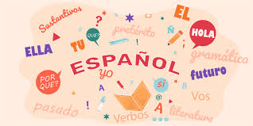
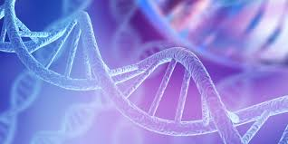
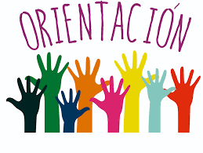
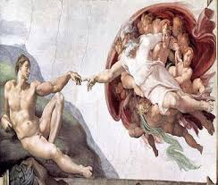
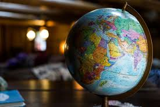
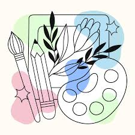
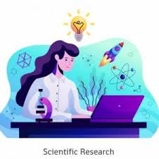

🌷 Materias Cursadas 🌷
📐 Matemáticas

Desarrollé habilidades para resolver problemas, aplicar fórmulas, realizar cálculos y fortalecer mi razonamiento lógico.
📖 Español

Mejoré mi comprensión lectora, ortografía y redacción de textos académicos.
🧬 Biología

Aprendí sobre los seres vivos, ecosistemas, genética y procesos biológicos.
⚛️ Física
Estudié el movimiento, las fuerzas, la energía y fenómenos naturales.
🧪 Química
Comprendí la estructura de la materia y las reacciones químicas.
🧭 Orientación

Fortalecí habilidades personales, académicas y de toma de decisiones.
🏛️ Humanidades

Reflexioné sobre la sociedad, la cultura y el pensamiento humano.
🇺🇸 Inglés
Desarrollé habilidades de lectura, escritura y comunicación en inglés.
💻 Capacitación en Informática
Aprendí programación, bases de datos, diseño digital y desarrollo web.
🌐 Cultura Digital
Conocí herramientas tecnológicas y el uso responsable de recursos digitales.
📜 Historia
Analicé acontecimientos históricos que han influido en la sociedad actual.
🌎 Geografía

Estudié el espacio geográfico, clima, población y recursos naturales.
⚖️ Derecho
Conocí normas jurídicas, derechos humanos y principios legales.
💰 Economía
Aprendí conceptos relacionados con producción, consumo y mercados.
🎨 Artes

Desarrollé creatividad y expresión artística mediante diferentes técnicas.
🎵 Música
Conocí elementos musicales y formas de expresión a través del arte sonoro.
🔍 Taller de Investigación

Aprendí a recopilar información, analizar datos y elaborar proyectos de investigación.